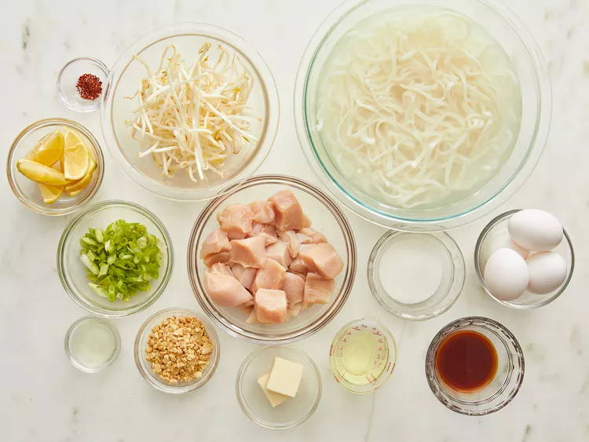
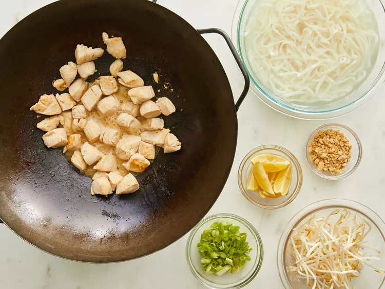
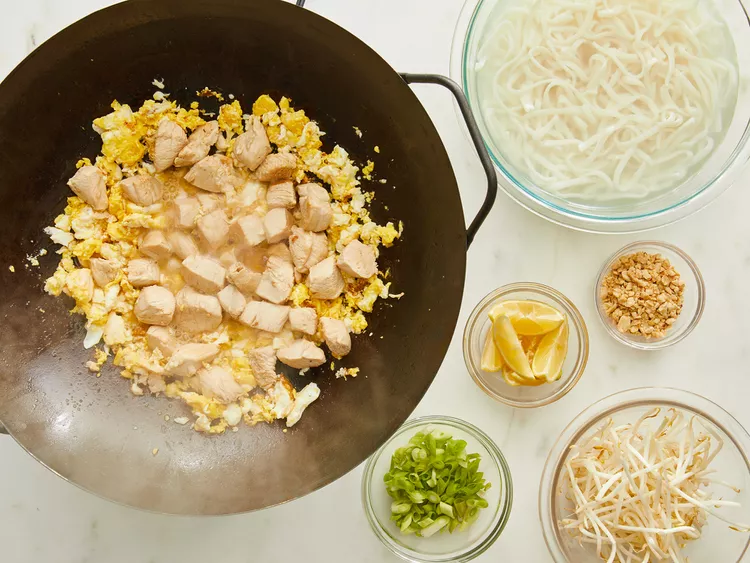

Gather all ingredients

Soak rice noodles in cold water until soft, 30 to 50 minutes. Drain and set aside.
Meanwhile, heat butter in a wok; add chicken and sauté until browned. Remove chicken and set aside.

Heat oil in the wok over medium-high heat. Crack eggs into hot oil and cook until firm. Stir in chicken and cook for 5 minutes.

Step 5Add softened noodles, sugar, fish sauce(vegan alternative maybe used), vinegar, and red pepper; mix well until noodles are tender. Adjust seasonings to taste.
Stir bean sprouts into wok and cook for 3 minutes.
Serve topped with green onions, crushed peanuts, and a wedge of lemon.